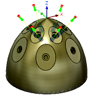
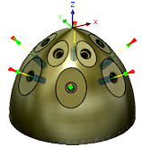

'''Angles mesurés à partir de l'axe de la broche'''
Permet de définir une plage limite basse pour sélectionner les perçages à usiner. Les angles sont définis à partir de l'axe vertical de la broche.
|
'''Angles mesurés à partir de l'axe de la broche''' |
 |
 |
Minimum 0 |
Minimum 35 |
Les sélections multi-axes créeront une position 3+2 pour le quatrième axe de rotation ou un usinage 5 axes continus.